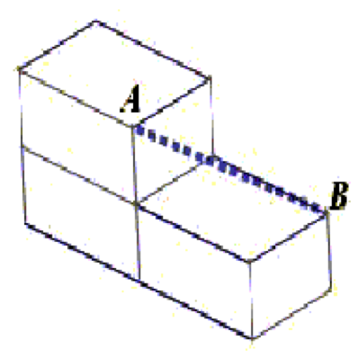

Propose a method for measuring the diagonal of a conventional brick, which is easily realied in practice $($without the Pythagorean theorem$)$.
Place the three bricks as shown in the figure and measure the distance AB:
